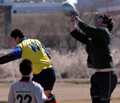

OLD STORIES - February 2008
What a Blow
Misato Sunday 24th Feb,
Over the last few weeks it's been snow that caused havoc with the fixtures so it was very frustrating when more matches were cancelled last Sunday on a clear Sunny day. Although the sun was shining, 100km/h winds forced the Musashino train line (and others) to stop, stranding players all across Saitama. Those who went by car to the Misato pitch, soon realized even if they did have a full squad, football was out of the question.
Watching local kids trying to have a kick around, the ball was going a couple of yards in one direction, then doing a U-turn and being blown 50~100 yards in the other. Any match would have been a farse, with morse time being spent chasing stray balls (although that's nothing new with some teams ;-)) Hopefully, with the help of captains, we can catch up all cancelled games to finish the season on time.
FJ.
Inter Edge Past Old Boys
 |
|
YCAC ground as seen from the space shuttle! |
YCAC Saturday 16th Feb,
In a hard-fought top-of-the table clash between two well-matched teams, FC International nabbed the points with a late winner to consolidate their Division 3 lead over second-placed Albion Old Boys.
The arid lunar landscape of the YCAC pitch has long ago ceased to be conducive to anything resembling The Beautiful Game, which is a pity because both sides had plenty of talented footballers on display. more ...
TC.
Embassy Rocked by Late Winner
YCAC Sunday 17th Feb,
The Embassy arrived at YC & AC in confident mood, and knowing that a point would move them out of the relegation places for the first time this season. That was reflected in an encouraging start; shifting the ball around nicely in midfield and mopping up loose balls at the back effectively. more...
RH.
 |
|
Jetro Striker Kawai gets up to head home an early goal, but it wasn't to be their day! |
Field Of D…ust!
Misato Sunday 17th Feb,
Only those who were blessed with a match on the Misato pitch on Sunday could agree that the one true factor that could decide a game was who kept the ball on the pitch longer. Any ball above the calf that was passed, shot, trapped, flicked…(and any other move you could do with a ball) was absolutely nulled due to the wind and dirt. more ...
OT.
Mid Table Misery
Todoroki Sunday 17th Feb,
Swiss vs. Celts, a thrilla’ it was not. How about this for a short summary, an 80 minute tale of a bouncing ball that no one could kick into the goal. It was sort of like WWII in the North of France – a battle for position in the mud trench of Todoroki Pitch #2. Don’t let anyone try to convince you otherwise, the pitch reminded me a lot of the film set “Saving Private Ryan”. more...
KN.
|  |
|
Unfortuately for Barb's Keeper, freezing winds made for shakey hands, costing the day! |
S.A.D.
Misato Sunday 17th Feb,
With the Lions not playing until later in the day the opportunity to watch football of a calibre higher than that of the Champions League would have to wait. The man in the park walking his dog had to make do with a free-flowing, end-to-end, open game of football which was ultimately decided by the Barb's keeper uncharacteristically selling the farm (twice!) in the 2nd half. more ...
AF.
JETs Sliced & Diced by Hibs
Hachioji Park Monday 11th Feb,
It was an interesting weekend on the football front; first, the surreal prospect of the Premier League adding a 39th game to the league season, to be played overseas and drawn by lots, had everyone desperately thumbing through their calendars trying to work out what had happened to most of February and all of March, for this was surely the stuff of Fools Day. more from JETS...
RK
After a few disappointing results the Hibs came out Monday night with a full squad and plenty of motivation. On the beautiful Hachioji pitch, under the lights, both teams were up for it. more from Hibs...
JA.
 |
|
Are you sure that's the centre-spot? Albion Oldboys try to kick off in blizzard conditions |
Albion Avalanche Buries JETs
Hanno Saturday 9th Feb,
The Albion Old Boys became The Alpine Cold Boys on a snowy winter evening in darkest Saitama, but neither a raging blizzard nor a determined Jets team could prevent the Superannuated Snowmen from taking the three points with another stylish performance. more ...
TC.
A Perfect Half
YC&AC, Saturday 9th February,
Forget about the Premiership, Seria A, Champions League...etc....If you want to watch the most flowing football nowadays, you should watch Lions playing!
Lions have now completed the first half of the season with a perfect record more ...
HS.
'O my Brothers'
 |
|
Snowed Under - Heavy snow wreaked havoc with Sundays schedule & more is forecast! |
Hachioji Park Saturday 9th Feb, (READERS WARNING - this story can screw with your eyes & brain!!)
A bitter winter nochy was the setting for the club derby and it was beautiful, o my brothers, …for 10 horrorshow minutes. Two key droogies were missing for this game, Glenn and O`Connell, leaving us a malenky bit poogly about the untested line up. Two bolshy defenders in Quinn and Musgrove and a goal keeper, Mignon, and right back, Baxter, who didn't get much spatchka the night before (both vecks however claimed to have spent the nochy doing different vesches). more ...
GQ.